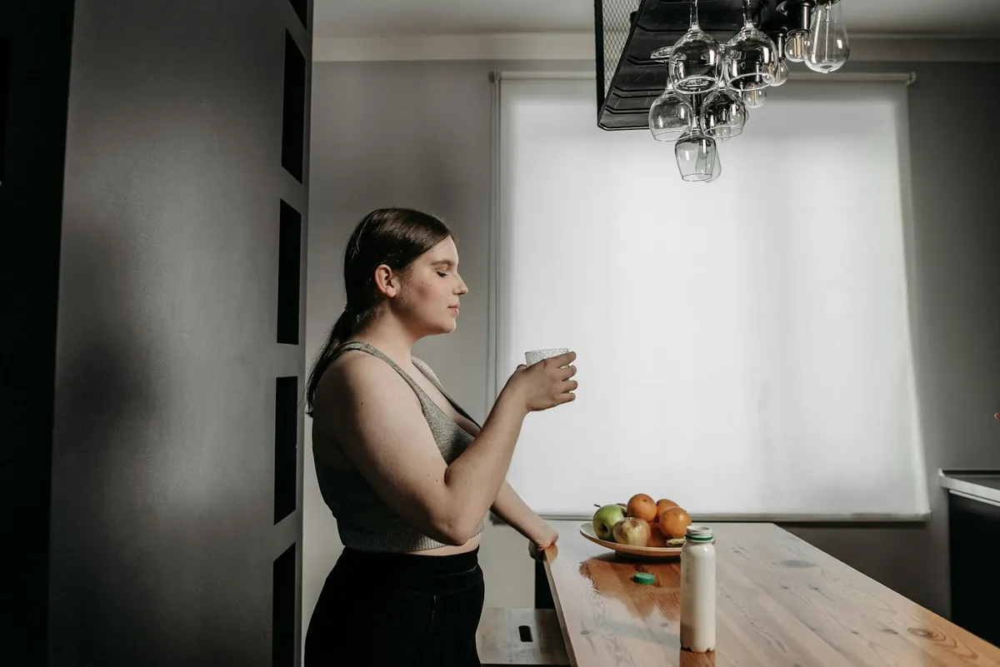

Unlock Your Best Health: The Surprising Benefits of Daily Hydration

Key takeaways
- I used to think drinking water was just… a thing you did.
- Like breathing.
- Track what feels sustainable and adjust gradually.
I used to think drinking water was just… a thing you did. Like breathing. It wasn't until I hit that mid-afternoon slump, feeling groggy and irritable, that I realized how much I was neglecting the most basic element of my well-being: water. Unlocking your best health often starts with the simplest habits, and for me, that meant finally understanding the profound impact of daily hydration. It’s not just about quenching thirst; it’s a powerful tool for boosting energy, improving your skin, aiding digestion, and sharpening your cognitive function.
My journey to better hydration wasn't a straight line. I’d chug a giant bottle in the morning and then forget about it until bedtime. Sound familiar? The truth is, our bodies are constantly losing water, and we need to replenish it consistently throughout the day. Forgetting to drink enough water is a common pitfall, but the rewards for getting it right are huge. Think of water as the unsung hero of your internal systems. It helps transport nutrients, regulate body temperature, and keep your joints lubricated. When you’re properly hydrated, everything just runs smoother.
One of the first things I noticed when I started prioritizing water was a significant boost in my energy levels. That dreaded 3 PM brain fog? It started to lift. I wasn't reaching for that third cup of coffee anymore. My body felt more alive, less sluggish. This isn't magic; it's science. Water is crucial for cellular function, and when your cells are happy and hydrated, your whole body feels more energized. It's a fundamental aspect of unlocking your best health.
My skin also thanked me. I used to struggle with dullness and occasional breakouts, and while I tried all sorts of expensive creams, the real change came from within. Drinking more water helped my skin look plumper, more radiant, and frankly, just healthier. It’s like giving your skin cells the moisture they need to function and look their best. It’s a simple, yet incredibly effective, beauty hack that’s accessible to everyone.
Digestive issues were another pain point for me. Bloating and discomfort were pretty regular occurrences. Increasing my water intake made a noticeable difference. Water helps break down food, allowing your body to absorb nutrients more effectively and preventing constipation. It keeps things moving smoothly through your digestive tract. If you're looking for a related healthy tip, consider exploring ways to support your gut health alongside hydration.
The 2-Minute Win
Right now, grab a glass of water and drink it. Then, set a reminder on your phone for one hour from now to drink another. That's it – a simple start to building a consistent hydration habit.
Cognitive function is another surprising area that benefits from hydration. Ever feel like your brain is in a fog? Dehydration, even mild, can impair your concentration, short-term memory, and overall mental clarity. I found that staying hydrated helped me stay focused during work and feel sharper throughout the day. It’s a crucial component of unlocking your best health, especially when you need to be on your game.
Here's a pro-tip I learned: Don't just focus on plain water. Incorporate hydrating foods like watermelon, cucumbers, and oranges into your diet. They contribute to your overall fluid intake and offer additional nutrients. This is another practical guide for staying hydrated.
So, how much water do you actually need? While the old eight-glasses-a-day rule is a decent starting point, individual needs vary based on activity level, climate, and overall health. A good way to gauge your hydration is by checking your urine color – pale yellow is generally a sign of good hydration. Listen to your body; it's your best guide. If you're looking for similar wellness insights, understanding your body's signals is paramount.
Making hydration a priority doesn't have to be complicated. I’ve found success by keeping a reusable water bottle with me at all times. I also like to infuse my water with fruits like lemon, lime, or berries for a little extra flavor. These small changes make a big difference in helping me stay consistent with this habit. For those seeking to explore more healthy-habits guides, consistency is often the secret ingredient.
Remember, unlocking your best health is a journey, not a destination. Small, consistent steps, like prioritizing daily hydration, can lead to significant improvements in how you feel, both physically and mentally. Educational only — not medical advice. Disclosure: This page may contain affiliate links.
Recommended Reading
- The Ultimate Guide to Daily Hydration: Boost Energy & Wellness
- Morning Hydration: Unlock Your Day with the Best Water Habits
- Watermelon's Secret Health Boost: What Scientists Just Found Out!
More in health
GLP-1 Drugs: A Surprising Perk for Addiction and Overdose Prevention?
Discover the surprising link between GLP-1 drugs and addiction/overdose prevention. Learn how these popular medications
Read article →Beat Fatigue: The Crucial Role of B12 & Folate
Feeling drained? Discover how B12 and folate are crucial for beating fatigue. Learn about symptoms, causes, and how to b
Read article →Related posts
GLP-1 Drugs: A Surprising Perk for Addiction and Overdose Prevention?
Discover the surprising link between GLP-1 drugs and addiction/overdose prevention. Learn how these popular medications
Read article →Beat Fatigue: The Crucial Role of B12 & Folate
Feeling drained? Discover how B12 and folate are crucial for beating fatigue. Learn about symptoms, causes, and how to b
Read article → health
healthBoost Your Iron: The Guava Juice Secret to Feeling Less Tired
Feeling drained? Discover how guava juice can significantly boost iron absorption, helping you feel more energized. Lear
Read article →